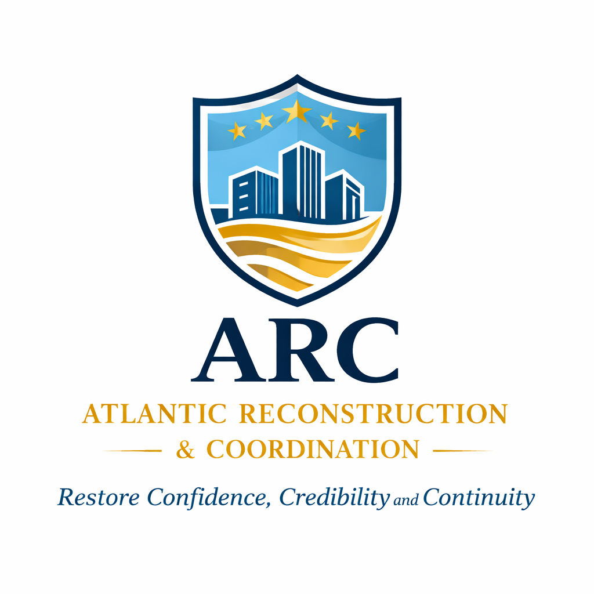
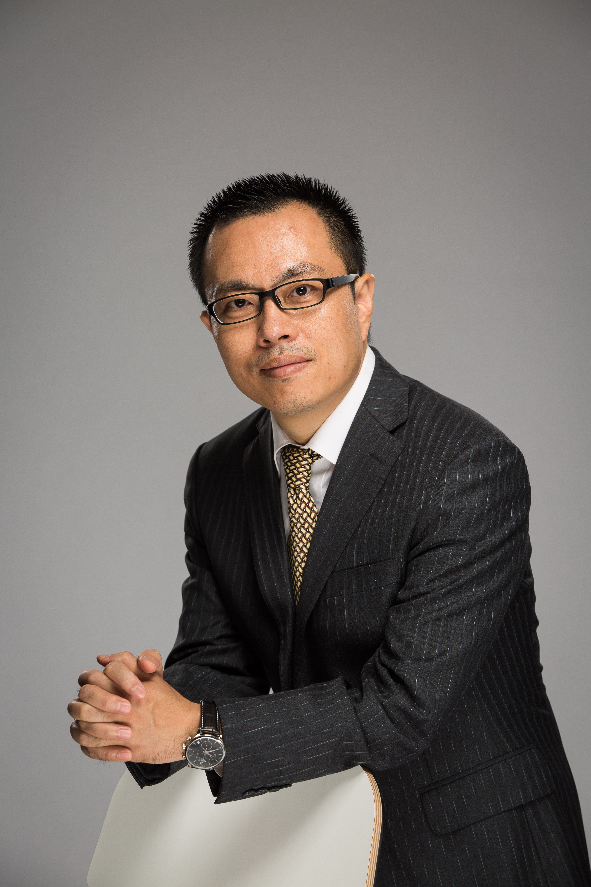
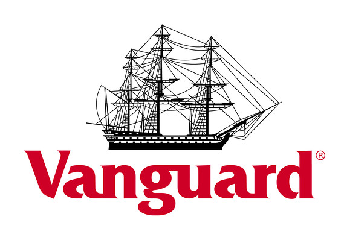
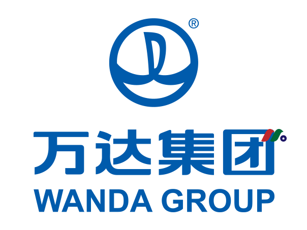
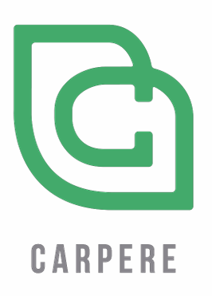
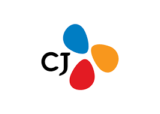
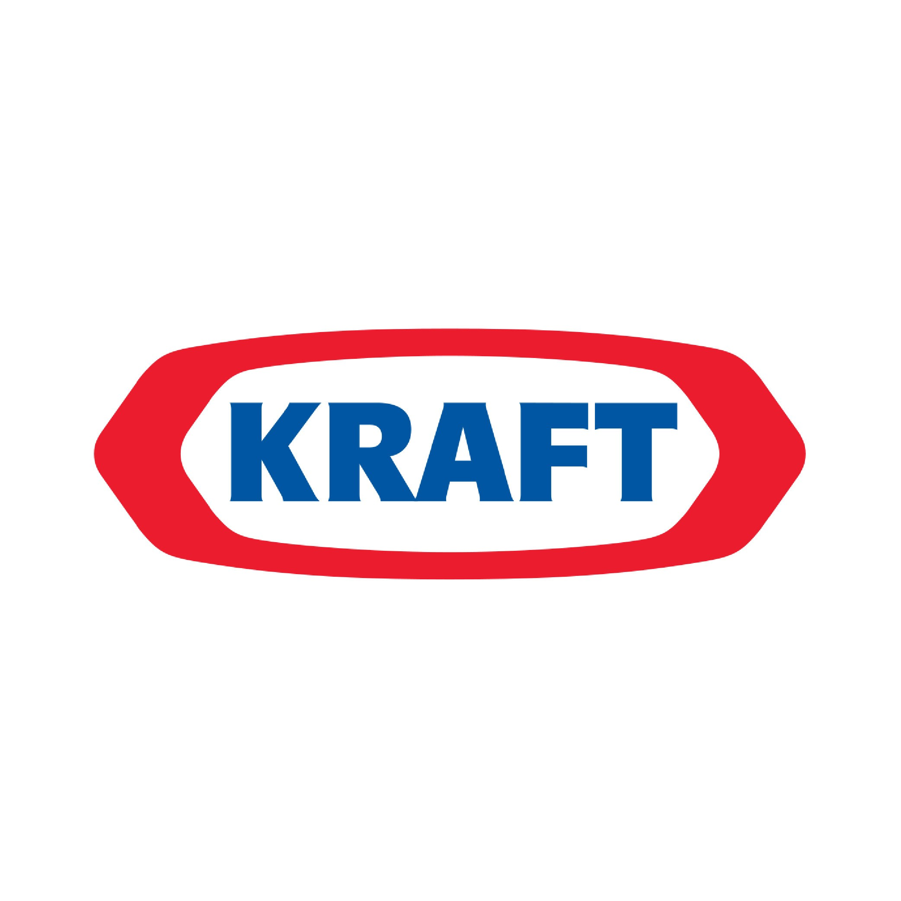

"Restore Confidence, Credibility and Continuity"
Company Overview
Atlantic Reconstruction & Coordination (ARC) is a specialized institutional platform dedicated to the reactivation of stalled high-value assets. By aligning the interests of sovereign stakeholders, original creditors, and international investors, ARC transforms illiquid projects into institutional-grade opportunities through sophisticated capital restructuring and direct operational intervention.
Leadership

Senior executive with 29+ years of experience managing complex multi-billion dollar portfolios and cross-border M&A for global conglomerates.





Flagship Case Study
$150M Coastal Resort Recovery
Context: Stalled development with 65% completion, facing developer insolvency and sovereign stakeholder misalignment.
Restructuring: ARC acquired distressed equity and restructured the capital stack using Preferred Equity and international migration-linked capital.
Outcome: Construction restart within 6 months; successful repositioning for international exit.
Senior Advisors

Real estate restructuring & global acquisitions

Distressed credit & capital structuring

NPL portfolios & sovereign restructuring
Inquiries: charles@atlanticreconstruction.org
© 2026 Atlantic Reconstruction & Coordination. Institutional Inquiries Only.